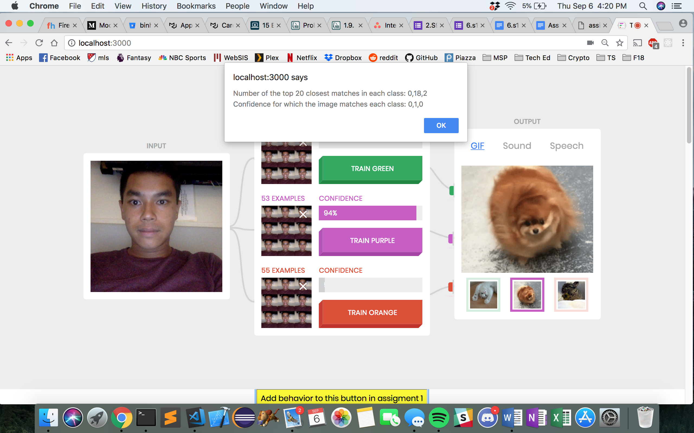

Name: Binh Le
E-mail: binhle@mit.edu
Other Assignments:
Added button behavior to alert the number of top K closest matches in each class and the confidences when clicked.
When training two classes with the same image set of a neutral facial expression the confidence never really converged at a number but fluctuated depending on tiny changes of the camera image. The number for the top 20 matches was 8, 12, 0 and the confidence was 0.4, 0.6, 0 at the time of pressing the alert button. This means the system was unsure about its classification of the current input. This makes sense since the two image sets are nearly identical.
When training three classes with three different objects (phone, water bottle, and candy), the confidence was correctly near 100% whenever a certain object was held up to the camera. When the water bottle was held up to the camera, the number for the top 20 matches was 0, 20, 0 with a confidence of 0, 1, 0. This means that the system is good at differentiating inanimate objects that are different in shape and color.
When training two classes with pictures of my face and my partner’s face, the confidence was nearly 100% when our faces were at a certain distance and alignment to the camera. The top 20 matches were 20, 0, 0 and the confidence was 1, 0, 0 when my face was upright and fit entirely in the input image. But when our faces were at various extreme distances (near/far) or rotated, the confidence was more variant.
The confidence values were scaled by ignoring the classes with less than 3 top K images and reweighing the probabilities by dividing the number of top K images for each class by the total number of top K images from classes with at least 3 top K images. This method hopefully ignores some of the noise from classes with only 1 or 2 top K images in order to prioritize classes with a much more significant number of top K images.
I trained three classes with different facial expression (smile, resting, and frown). I used both the default confidence value calculation in addition to considering only the classes with at least 3 top K images. I think that the at least 3 top K images method works better because when I presented a resting image to the system, there was less noise in the confidences and it was more confident that I was presenting a resting face. However, with the default method, there would be instances when 1 or 2 images from the smiling and frowning class made the top K images and the confidences would be more variant although I didn’t change my resting face.
I think my alternative method would be useful when the three classes of images are mostly similar and there are only slight differences. By ignoring classes with less than 3 top K images, it could help eliminate noise and the class outliers with only 1 or 2 images showing up on the top K images so that there is a more confident prediction for the classes with many top K images.
Note that the confiddence values in the alert window as the confidence shown on live displays are delayed and do not correlate with the values at the time of the button press. This image shows that there is still a 0.05 confidence prediction when 1 of the top K images match the frown class when using the default confidence scaling.
This image shows that there is a 0 confidence prediction when 2 of the top K images match the frown class when using the alternate confidence scaling. This method boosts the confidence of classes with many images in the top K images.
The number of training examples were limited so that the green class has a maximum of 5 images, the purple class has a maximum of 20 images, and the orange class has a maximum of 50 images. Once the maximum was hit, a window alert would pop up and let the user know that no more images could be added. There was a global variables for each class limit and the code checks if a certain classes number of images had reached that max before deciding to add an image or alert the user.
In this example, I train classes with three different objects (vitamin bottle, contact solution, wet wipes) with a limit of 5 images for vitamins, 20 for contact solution, and 50 for wet wipes. When holding up the vitamin bottle, all 5 vitamin bottle images in the class were included in the top K images but because of the confidence calculation, there is only 25% confidence because the 15 other images must be from another class. This shows that if we have very different limits on the number of images for each class, we would also have to rethink our confidence calculations in order to take care of cases where classes do not have at least K images to be in the top K images.
In this example, I train classes with three slightly different facial expressions (frown, resting, smile) with a limit of 5 images for frown, 20 for resting, and 50 for smiling. When I presented a resting face as input, the system was only 20% confident that I was showing a resting face and it was 79% confident that it was a smile. This shows that because the class images consisted of only slightly different expressions, it could not tell the two expressions apart. Also because of the sheer number of images in the smile class, it was more likely to include those in the top K images and wrongly skew the confidence predictions.
For this section, I decided to adjust the value of K and see how that affects confidence predictions. I used a similar test where I trained 3 classes with slightly different facial expressions (frown, resting, smile), using 40 images for each class. I first used a K value of 5. When I presented a resting face as input, it returned 99% confidence that it was a resting face.
However, when I did the same test with a K value of 35, the results were very different. When I presented a resting face as input, it returned a confidence of only 61% for a resting face. This shows that by having a large K value, it doesn't really differentiate any of the images in the top K images. It only cares about if the image is in the top K matches not if it is the most similar match or the least similar match. With the K value of 5 and a total 120 test images, the images making the top 5 matches were more likely to be a part of the resting face class. But when K was 35, it was likely that images from other classes would be included because the image classes were mostly similar other than the facial expressions.